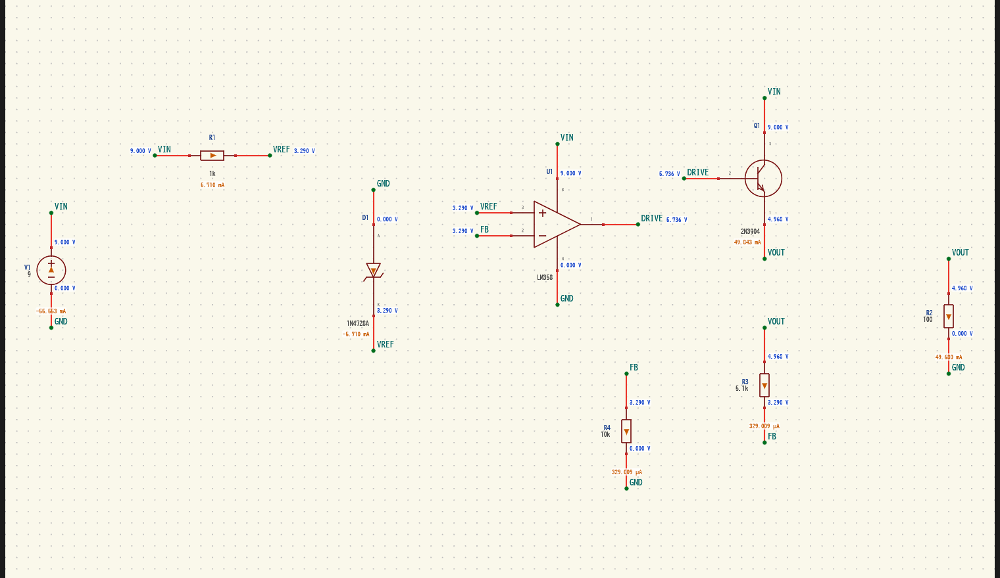
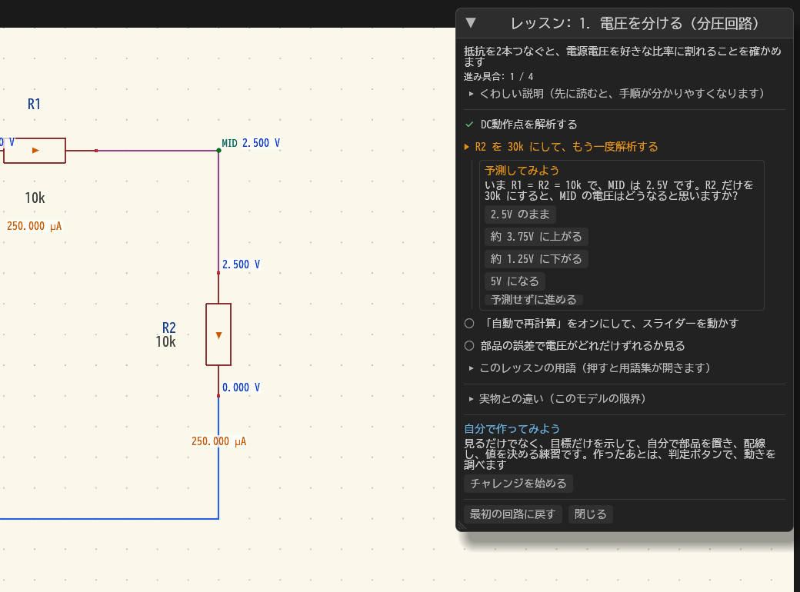
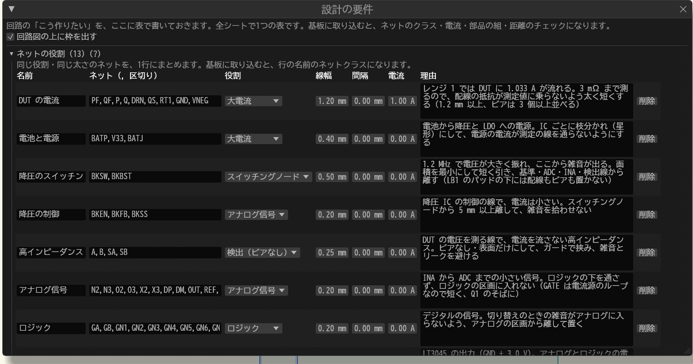
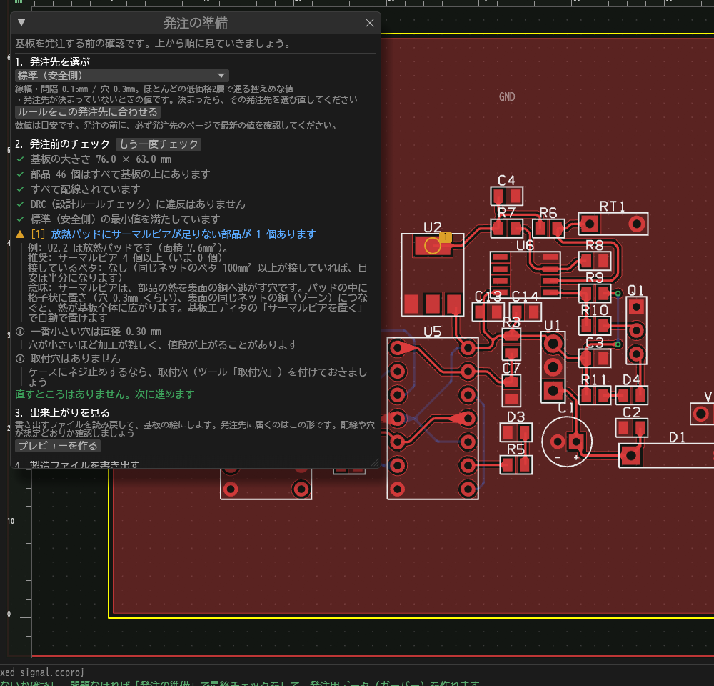
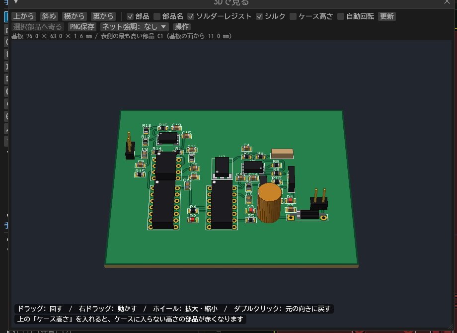
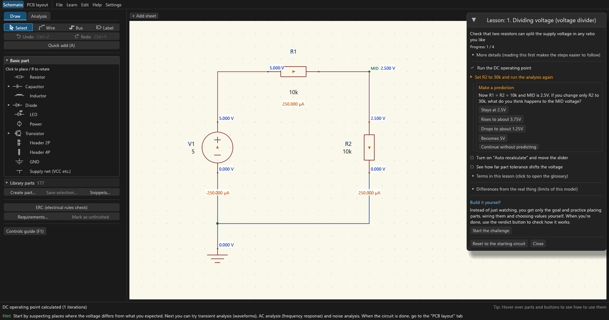
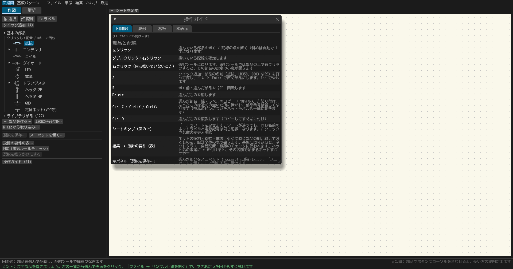

回路図を描いて、動かして、
基板にして、発注データまで。
circuitCad は、回路図・SPICEシミュレーション・基板設計・Gerber出力を1本にまとめた、初学者向けの回路CADです。「学ぶ → 実験する → 基板を発注する」を、ソフトを乗り換えずにつなげます。画面は日本語と英語に対応しています。
アルファ版・無料・インストール不要。zip を展開して circuitCad.exe を起動するだけです。
署名がないため、Windows の SmartScreen が警告を出すことがあります。「詳細情報 → 実行」で起動できます。

こんな人に
- 電子工作や回路の勉強を始めたばかりで、KiCad や LTspice は入り口が高いと感じている人
- 回路図を描くだけでなく、動かして確かめたい人
- 「なぜその値なのか」を、計算の手順つきで知りたい人
- 自分で設計した基板を、発注するところまでやってみたい人
1本でつながる
初学者のための作り
迷わない画面
ボタンにポインタを置くと説明が出て、配線ミスや定格オーバーは「原因と直し方」つきで知らせます。日本語と英語を切り替えられます。
学びながら進める
学習パス7本、手順つきレッスン51本、基板のレッスン8本、判定つきの「作ってみよう」10本。結果を予想する問いも出ます。
壊して学べる
部品やピンを断線・ショートさせて、影響をシミュレーションで比べられます。基板に故障を仕込んで直す練習もできます。
見ながら理解する
電圧は配線の色、電流は矢印で、回路図の上にそのまま重ねて表示。AC・過渡・ノイズ・位相余裕などの解析も備えています。
発注まで行ける
自動配線・DRC・3D表示から、JLCPCB / PCBWay / OSH Park のルールに合わせた発注前チェックと Gerber 出力まで。
部品とサンプル付き
140部品以上と100本以上のサンプル回路を同梱。KiCad のシンボル・フットプリント・回路図も取り込めます。
特長の紹介

結果が、回路図の上に出る
解析を実行すると、電圧は配線の色と数字で、電流は矢印で、描いた回路図にそのまま重なります。別の窓のグラフと見比べる必要がありません。
- 部品の値をスライダーで動かすと、「自動で再計算」で結果がすぐ変わる
- 抵抗や IC の発熱・LED の電流など、定格を超えそうな所を警告
- 結果は ngspice と比べて確かめています (精度のページ)

予想してから、確かめる
レッスンは、手順を読む前に「どうなると思うか」を聞きます。予想してから解析すると、当たっても外れても、なぜそうなるかが残ります。
- オームの法則から、安定化電源・Arduino 互換ボード・スイッチング負荷・電池・信号まで、学習パス7本
- 各レッスンに「実物との違い (モデルの限界)」と「実機で確かめよう」(12V 以下の実験) つき
- 「作ってみよう」は目標だけを示し、自分で作った回路をシミュレーションで判定
- 用語集 (読み・別名で引ける) と、レッスンの用語からの呼び出し

「こう作りたい」を表に書くと、基板で点検される
回路図に、ネットの役割 (大電流・スイッチング・アナログ信号など)、線幅と電流、近くに置く部品、離す部品、配線の道筋で測る値を、理由と一緒に書いておけます。
- 基板に取り込むと、ネットクラス・自動配置・自動配線・点検に使われる
- 行ごとの結果 (満たした / まだ) が、回路図と基板の両方に出る
- 承知した例外も、理由つきで残せる

発注の前に、もう一度確かめる
「発注の準備」は、発注先を選んで、その店のルールで基板を見直し、製造データを書き出すところまでを順に案内します。
- JLCPCB / PCBWay / OSH Park のルールに合わせた点検 (線幅・間隔・穴・シルク・マスク)
- 基板の外の部品、未配線、電流に対して細い配線、サーマルビアの不足などを、直し方つきで指摘
- 出来上がりのプレビュー、Gerber・ドリル・BOM・部品位置の書き出し、注文の手順

3D で見て、ケースに収まるか確かめる
部品の高さとはんだマスクの色まで、出来上がりを立体で確かめられます。ケースの高さを入れると、入らない部品が赤くなります。
- 基板の外形・穴・部品の箱を DXF で書き出し、ケースの DXF から外形と穴を読み込み
- メーカーの STEP ファイルを部品の形として取り込み
- 回路図・基板・3D で、選んだ部品とネットが連動して光る
機能の一覧
分野ごとにまとめています。見出しを押すと開きます。
回路図描く・点検する
- 部品の配置と配線 (部品を動かすと配線が付いてくる)、Undo / Redo、コピーと貼り付け
- 複数のシート、階層設計 (同じ回路を記号にして何回も使う)、バス (
D[0..7]) - ERC (配線ミスの点検)。指摘には原因と直し方がつき、意図した未接続には NC の印。描きかけの範囲は点検から外せる
- スニペット (選んだ部分を保存して再利用)、クイック追加 (名前で探して置く)
- 図枠 (タイトル・版・日付・作者・メモ)、SVG と PDF への書き出し
- 電源は値に応じて、直流 / 交流 (正弦波) / パルスの記号で描き分け
シミュレーション解析の種類
- DC 動作点、過渡 (波形の曲がり具合で時間刻みを自動で細かく)、AC (ボード線図)、DC スイープ
- ノイズ、極と零、ループゲイン (位相余裕・ゲイン余裕)、ネットから見たインピーダンス、ひずみ率 (THD)・スペクトル
- 部品の自己発熱と、温度の時間変化
- デジタル回路 (ゲート・フリップフロップ・カウンタ・シフトレジスタ。伝搬遅延とセットアップ / ホールドの点検)
- コンデンサの直流バイアス (動作電圧で減る容量)、ESR / ESL、電池の内部抵抗と放電
- メーカーの SPICE モデル (一部の書き方) と、ngspice 向けのネットリストの書き出し
- シミュレーションの前提 (モデルが仮定していること) を一覧で表示
実験・波形・故障確かめる・壊してみる
- 部品値のスライダーと「自動で再計算」、温度の影響
- 部品の誤差のばらつき (モンテカルロ) と最悪ケース、効いている部品の順位
- 部品の値を振るパラメータスイープ (波形やカットオフを重ねて比べる)
- 故障シミュレーション: 部品やピンの断線・ショート・逆向き・値の変化と、壊れが広がっていく様子
- 波形の測定カーソル、ステップ応答の指標 (立ち上がり・行き過ぎ・整定時間)、電源の効率
- 定格のチェック (発熱・電流・電圧の余裕) と、スペック表 (目標と結果、実測の欄)
学習レッスン・チャレンジ・用語集
- 学習パス7本 (安定化電源・Arduino 互換ボード・Mega 互換ボード・基板の作法・スイッチング負荷・電池で動く機器・信号)。進み具合が残る
- 手順つきレッスン51本 (部品を1つずつ知る「素顔」のレッスンを含む)、予想を聞く問い
- 基板のレッスン8本 (配線の電圧降下、発注前の直し、差動ペア、故障を探して直す練習など)
- 「作ってみよう」10本: 目標だけを示し、作った回路をシミュレーションで判定。ヒントと答えの回路つき
- 値の決め方: LED の抵抗・分圧・フィルタ・レギュレータ・トランジスタや MOSFET のスイッチ・降圧 / 昇圧・オペアンプなどを、計算の手順・注意点・壊れ方つきで
- 用語集・索引、操作ガイド (F1)、実機で組み立てて測る手順と、測った値とシミュレーションの比べ方
基板: 配置と配線取り込みから配線まで
- 回路図から取り込み、回路図との差分の表示、ピンの入れ替えを回路図へ戻す
- 自動配置 (つながりの強い部品をまとめる、IC のまわりにバイパスコンデンサと水晶を寄せる、ロックした部品はそのまま)、整列、部品番号の振り直し
- 自動配線、押しのけ配線、45° / 直角 / 自由の曲げ方、パッドへの垂直な出入り
- 差動ペア、長さ合わせ (蛇行)、配線後に近くの部品を動かして引き直す
- 2 / 4 / 6 / 8 層 (内層に配線とベタ)、ネットクラス (線幅・間隔・ビア・使う層)
- 基板のスニペット (部品を配線・ビアごと別の基板へ)
基板: 銅・仕上げ・シルク形を整える
- ベタ (銅箔ゾーン): クリアランス、サーマルリリーフ、孤立した銅の除去、優先順位、図形の編集
- GND ベタを一押しで、ビアの縫い付け (重なりに並べる / 縁に沿って柵にする)、サーマルビア
- 配線の仕上げ: 角の丸め、太さの段差のなだらか化、涙型、パッドの首、分かれ目の補正
- 禁止領域 (配線・ビア・ベタ・部品を層ごとに)
- シルクの文字・部品番号の大きさと向き・線の太さを、発注先の下限を守って手で直す。部品番号は重なりをよけて配置
- テストポイント、フィデューシャル、寸法線、距離を測る道具
基板: 点検DRC と、電気の目で見る点検
- DRC (間隔・線幅・穴・基板端・ショート・未配線・ベタのかけら・鋭角・シルク)、作業しながらの点検 (別のスレッドで、違反の印を画面に)
- 配線の太さを電流から点検、配線の電圧降下 (結果をシミュレーションに戻せる)
- IC の電源ピンのバイパスコンデンサ、サーマルビア、配線のインピーダンスの目安
- ネットの一覧 (クラス・層ごとの長さ・遠回り・ビア・線幅)、設計の要件の行ごとの結果
- 修理の練習: 動く基板に故障を1つ仕込み、症状から探して直す
発注・製造データ注文まで
- 発注先 (JLCPCB / PCBWay / OSH Park) のルールに合わせる、発注前チェック
- 出来上がりのプレビュー、Gerber・Excellon ドリル・BOM・部品位置 (CPL) の書き出しと、注文の手順
- 部品ごとの店の型番 (DigiKey・秋月・LCSC) と、購入リスト
ファイル・ほかのソフト取り込みと書き出し
- KiCad: シンボル (
.kicad_sym・旧形式.lib)、フットプリント (.kicad_mod)、回路図 (.kicad_sch) を開く - Ultra Librarian・SnapEDA の zip (シンボル・フットプリント・STEP を自動で拾う)
- 部品作成フォーム: データシート (PDF) の窓で、語の検索・見出し・表からピンの取り込み・図面の数字を寸法の欄へ
- DXF (書き出しと、ケースの図面からの読み込み)、基板の SVG、回路図の SVG / PDF、SPICE ネットリスト
- 自動保存と、落ちたあとの復旧
画面なしで使う ccadスクリプト・AI・自動化
- 1行1コマンドのスクリプトで、回路を作る・ERC・解析・基板・製造データの書き出しまで実行
- 答えは1行1個の JSON。MCP サーバーにもなるので、AI エージェントが回路を組んで確かめられる
- 使い方は docs/cli.md
画面と言語使いやすさ
- 日本語と英語の画面 (「設定」→「Language / 言語」)。メニュー・説明・レッスン・用語集まで切り替わるalpha.11 から
- ボタンと入力欄のホバー説明、画面下のヒントと豆知識、ツールのアイコン表示
- Windows 版と Linux 版 (Linux は WSL2 で確かめたのみ)
画面




3ステップで試す
- リリースページから zip をダウンロードして展開し、circuitCad.exe を起動します。
- 起動時のカードの「最初のレッスンを始める」を押します。最初はオームの法則で、手順どおりに押すとシミュレーション結果が回路図に重なって出ます。
- 慣れたら「学ぶ → 学習パス」で、安定化電源づくりに進みます。できあがった回路を先に見たいときは「ファイル → サンプル回路を開く」から。